Вітальня · журнал «ДентАрт» 2017 №3
Ректор ТДМУ Зураб Вадачкоріа: «Наш університет успішно проходить шлях гармонізації навчального процесу з європейськими стандартами»

Сьогодні у Вітальні «ДентАрта» Зураб Вадачкоріа, ректор Тбіліського державного медичного університету, якому з командою однодумців удається успішно гармонізувати навчальний процес у своєму університеті з європейськими стандартами освіти. Зураб Отарович і сам є прикладом того, як власне життя збудувати у відповідності з девізом ТДМУ – «PER TRADITIONES AD FUTURUM». Доктор медичних наук, професор, керівник департаменту дитячої щелепно-лицьової хірургії Академічної клініки педіатрії ім. Г. Жванія ТДМУ, член Європейської академії наук і мистецтв, лауреат Премії миру Гузі, член виконавчого комітету Університетів Шовкового шляху (ESRUC), почесний професор Тернопільського медичного університету (Україна), він невтомно прокладає шляхи, якими могли б іти до вершин професійної досконалості і його молоді колеги.
– Гамарджоба! Доброго дня! Шановний пане Вадачкоріа, за роки Вашої роботи ректором Тбіліського державного медичного університету в медичній науці і освіті відбулося багато змін. Які з них найважливіші? Чим може пишатися ректор Вадачкоріа?
– Цікаві і динамічні вищі освітні програми, кваліфікована професура, ефективний менеджмент, високий стандарт інтернаціоналізації освітньої та наукової діяльності, сучасна навчальна і дослідницька інфраструктура – усе це фактори, що визначають зростання успіху Тбіліського державного медичного університету на міжнародній арені, і я цим, безумовно, пишаюся.
Розвиток клінічного сектора, університетських клінік та їх органічне входження в академічний процес – предмет безумовної гордості моєї команди. Серйозним проривом на цьому напрямку у порівнянні з попередніми періодами (коли навчальну клінічну базу становили лише три університетські стоматологічні поліклініки та афілійовані медичні установи) стали організація, повне оснащення, причому в основному університетськими ресурсами, і всебічне забезпечення функціонування Академічної клініки педіатрії та Першої багатопрофільної університетської клініки, чому передувала досить трудомістка і складна робота. Ці університетські клініки разом з трьома стоматологічними клініками і понад сотнею афілійованих медичних установ забезпечують високий стандарт вищої медичної освіти.
За останні п'ять років в університеті розроблено і задіяно нові, спільні з нашими зарубіжними партнерами програми: програма Медицини – спільно з Університетом Еморі (Атланта, США), бакалаврська та магістерська програми із Суспільної охорони здоров'я і менеджменту – спільно з академією UniMan Гренобля (Франція), грузино-австрійська програма Сестринської справи – із Західним освітнім центром AZW (Інсбрук, Австрія).
Університет брав активну участь у заходах з гармонізації Болонського процесу і був включений до тематичної групи MEDINE, де розроблялися стандарти медичної освіти і створювалися нормативні документи. Прикметно, що в робочих групах MEDINE-2 з університетів поза Євросоюзом брали участь лише Тбіліський державний медичний університет та Університет Анкари.
У нашому університеті успішно розвивається програма, яка передбачає запрошення провідних професорів зі США, країн Євросоюзу, Великої Британії, Туреччини, Ізраїлю та інших країн. З України в ній беруть участь почесний доктор Тбіліського державного медичного університету Сергій Радлінський і професор Любов Смаглюк. За цією програмою у 2012-2017 роках у нашому університеті читали лекції та брали участь в інших заходах понад триста іноземних професорів.
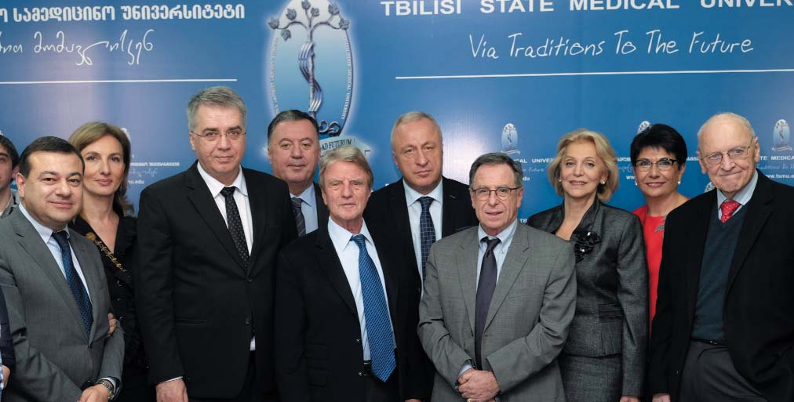
Особливу значущість має профінансований Євросоюзом міжнародний проект TЕMPUS «Модернізація додипломної медичної освіти у східних сусідніх країнах Євросоюзу», в якому поряд зі знаменитими університетами Європи – Університетом Лідса (Велика Британія), Університетом Утрехта (Нідерланди), Університетом Гранади (Іспанія), Університетом Сакрекора (Італія) – брав участь Тбіліський державний медичний університет, а також університети Баку і Нахічевані, і що особливо хочеться відзначити, два українські університети – медичні університети ім. Богомольця (Київ) та Івано-Франківська. Координатор проекту – професор Труді Робертс, президент Асоціації медичної освіти Європи, директор Інституту медичної освіти Університету Лідса.
Основною метою проекту була розробка нової, відповідної європейським стандартам моделі додипломної медичної освіти і її впровадження у східних сусідніх країнах Євросоюзу – Грузії, Україні та Азербайджані. У відповідності з цим проектом у нашому університеті створено Центр Академічного Розвитку, мета якого – перепідготовка академічного персоналу за методологією медичної освіти. У Центрі регулярно провадяться тренінги за спеціально розробленими модулями.
Ми особливо пишаємося тим, що саме Труді Робертс, президент Асоціації медичної освіти Європи, на підсумковій конференції заявила, що проведені у Тбіліському державному медичному університеті перетворення є революційними в медичній освіті.
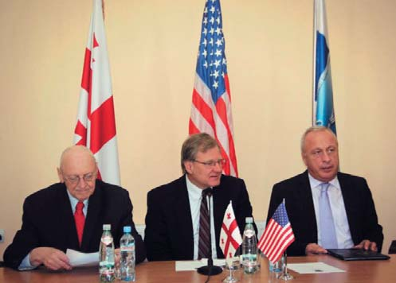
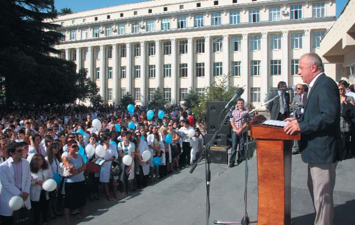
Професор Медичної школи Університету Еморі (Атланта, США), почесний громадянин Грузії, почесний доктор ТДМУ Кеннет Уолкер, Його Високоповажність, Надзвичайний і Повноважний Посол США в Грузії Річард Норланд і ректор ТДМУ, професор Зураб Вадачкоріа. 2014 р. Ректор ТДМУ, професор Зураб Вадачкоріа на офіційній церемонії початку навчального року.
– У вашому університеті навчається чимало студентів з інших країн. Це свідчення того, що ви даєте освіту на рівні найвищих світових стандартів?
– Так, близько 30% наших студентів – іноземці, це понад дві тисячі молодих людей із 63 країн. За вартістю освіти ми нарівні зі східноєвропейськими країнами, так що велика кількість іноземців пояснюється аж ніяк не низькою ціною або ж активною роботою нашого міжнародного департаменту та агентств; і врахуйте – це при тому, що у нас поки що немає гуртожитку. Причина нашої популярності, я вважаю, – ті реальні результати, які наші випускники демонструють на ліцензійних іспитах різних країн (USMLE, PLAB, YOK, ліцензійний скринінг-іспит Індії та ін.). Адже медицина – регульована професія, і для отримання права на самостійну медичну діяльність у різних країнах обов'язково треба скласти досить складні іспити. І результати таких іспитів підтверджують, що ми даємо освіту, яка відповідає високим міжнародним стандартам.
На нинішньому етапі основне завдання Тбіліського державного медичного університету – досягти міжнародної акредитації наших програм. На відміну від вузів іншого профілю, терміни міжнародної акредитації медичних шкіл строго лімітовані: згідно зі спільною постановою ECFMG (Освітня комісія для іноземних медичних випускників), WFME (Всесвітня федерація медичної освіти), WHO/ВООЗ (Всесвітня організація охорони здоров'я) та FAIMER (Фонд сприяння розвитку міжнародної медичної освіти і досліджень), після 2023 року на євроатлантичному просторі будуть визнані лише дипломи вузів, котрі мають міжнародну акредитацію. Для її отримання ВНЗ повинен за кілька етапів пройти процес перевірок і оцінок. Ми впевнені, що з успіхом упораємося із цим завданням.
Тбіліський державний медичний університет уже не один рік робить активні і ефективні кроки з гармонізації академічного процесу до європейських стандартів; у нас у систему медичної освіти впроваджено такі інноваційні методи навчання, як PBL (Problem-Based Learning – Навчання на основі проблем), CBCR (Case-Based Clinical Reasoning – розвиток клінічного мислення, заснований на клінічних міркуваннях), крім цього, майже безальтернативний для медичної освіти метод контролю отриманих студентами знань – об'єктивний структурований клінічний екзамен (OSCE, ОСКЕ) і, звичайно, використання стандартизованих пацієнтів для оцінки діяльності студентів.
В оволодінні клінічними навичками ефективно застосовуємо навчальний симуляційний центр, оснащений за останнім словом цієї методології.
Природно, актуальним залишається і традиційний метод навчання біля ліжка пацієнта («Bed Side Teaching»), практичні заняття в університетському госпіталі: курація хворих, складання історій хвороб, обходи з викладачем і лікарем, клінічний аналіз за плановими темами, участь студентів у прийомі невідкладних хворих та реанімаційних заходах, семінарські заняття з розглядом складних розділів клінічної медицини і т.д.
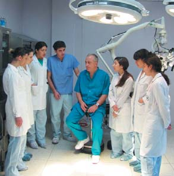
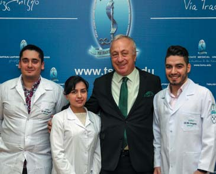
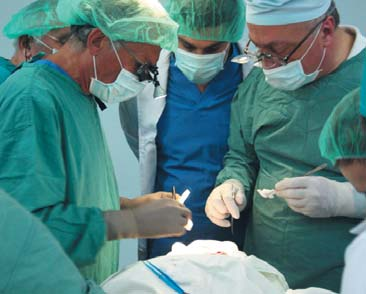
Професор Зураб Вадачкоріа на занятті зі студентами. Ректор зі студентами сьомого семестру американської програми медицини ТДМУ (спільно з Університетом Еморі, Атланта, США), котрі успішно склали перший етап USMLE. Проф. Гельмут Зібер, керівник клініки щелепно-лицьової і пластичної хірургії та імплантології (Дуйсбург, Німеччина), почесний доктор ТДМУ, і ректор ТДМУ, проф. Зураб Вадачкоріа на операції в Академічній клініці педіатрії ім. Г. Жванія.
– У радянській традиції підготовки лікарів була інтернатура, і вона залишається в ряді пострадянських країн, в т. ч. і в Україні. Але у нас усе частіше говорять про те, що інтернатуру треба скасовувати, оскільки лікар-інтерн уже працює, йому слід платити гроші, а він змушений ще два роки сам оплачувати своє навчання після диплома. У Грузії інтернатуру замінили резидентурою. У чому її головна відмінність і що це дало?
– Резидентура – запропонований Євросоюзом шлях для визнання вузької спеціалізації і професійної кваліфікації лікаря і регулюється Євродирективою, зокрема Directive 2005/36/EC. Через резидентуру готуються лікарі і в США. Основна відмінність між інтернатурою і резидентурою – тривалість підготовки, а також гармонізація часу і програм з глобальними вимогами, що врешті-решт і визначає професійне визнання. Щодо зарплати, то я вважаю, що клінічна активність резидента повинна оплачуватися, дефіцитні ж спеціальності можуть бути оплачені державою.
Інтернатура і клінічна ординатура в Грузії проіснували до 2000 року, коли обидві були скасовані і була задіяна резидентура.
Короткий історичний екскурс з цього питання. Після розпаду Радянського Союзу в Грузії все виразніше формувалася думка про необхідність пошуку нових форм післядипломної медичної освіти, більше орієнтованих на новації і в теорії, і в клінічній практиці. І це мало відбуватися так, щоб основні акценти були зроблені на повсякденній і серйозній клінічній практиці молодих лікарів. Словом, у молодого лікаря мало бути багато пацієнтів, які повинні були отримувати сучасне лікування. Саме тому в 1996 році, уперше в Грузії, професор Марина Мамаладзе (тоді ще – доцент) започаткувала післядипломне навчання типу резидентури у стоматології. Цю форму вона запозичила зі США і адаптувала до грузинських реалій. Нічого дивного, що у Грузії резидентура зародилася в стоматології. Адже передусім ми після розпаду Союзу побачили і переконалися у крайній обмеженості радянської стоматології і в безмежних можливостях західної.
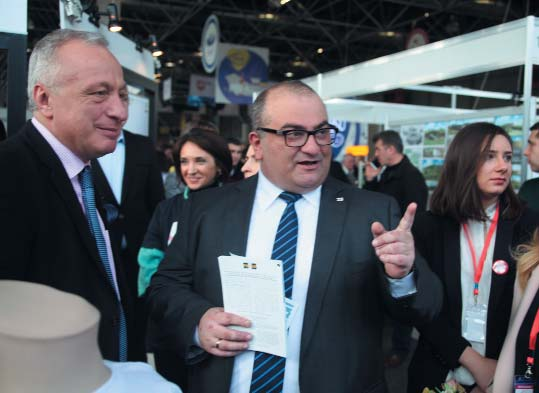
Цей досвід був оцінений і підтриманий Урядом Грузії, зокрема Міністерством охорони здоров'я, і наприкінці 1999 року відбувся перший прийом у резидентуру. З того часу шлях до отримання права на клінічну діяльність лікаря, в тому числі і лікаря-стоматолога, проходить через резидентуру.
– Цікава система управління університетами у вашій країні, коли є посади ректора і канцлера. Як розподілені обов'язки між двома керівниками?
– Керівником університету є ректор, він же – голова Академічної Ради, найвищого колегіального органу управління. Канцлер – керівник адміністрації, відповідає за фінансову складову діяльності університету і представляє його у фінансово-економічних питаннях. Угоди, пов'язані з фінансово-економічними аспектами, ректор і канцлер підписують спільно. Маю наголосити, що у Тбіліському державному медичному університеті всі серйозні фінансові питання є предметом обговорення колегіальних органів управління – Академічної Ради та Ради Представників (Сенату).
– Між Україною і Грузією завжди існували культурні контакти і ментальна симпатія між людьми. Відомі слова Лесі Українки: «Який цікавий, дивний куточок – Грузія! Скільки мужності і доблесті повинен мати народ-жменька, щоб уціліти і охоронити себе від напастей і знегод, які випали на його долю! Якби я не була українкою, то хотіла б бути грузинкою». Є музей і бюст Лесі Українки в Сурамі, чудовий пам'ятник – у Телаві... Знаємо, що Ви, буваючи раніше в Україні, відвідували музей Давида Гурамішвілі в Миргороді і навіть подарували йому цінні експонати. У Тбілісі відкрито пам'ятник Тарасові Шевченку, нашому Пророкові, котрий у поемі «Кавказ», звертаючись до горців – борців за свободу, кинув заклик «Борітеся – поборете!», який надихав і нас на боротьбу за незалежність, і навіть на Майдани у 2004 і 2013 роках виходили з ним і українці, і наші побратими з Кавказу. Наскільки сьогодні Україна присутня в Грузії?
– Україна була і завжди буде особливою країною для кожного жителя Грузії. Україна створила новий імідж – імідж народу, який героїчно бореться, захищаючи свої права, за досягнення омріяної мети – жити гідно, з правдою і в гармонії, з розумінням відповідальності, яка приходить зі свободою.
Історія і цінності завжди об'єднували народи. Долі України і Грузії багато в чому схожі. Ми разом подолаємо труднощі, допоможемо одне одному і зуміємо протистояти будь-якому ворогові в ім'я життя, майбутнього і свободи.
У Грузії трохи раніше від вас вирішили, що краще більше демократії і ні – корупції. Ми твердо йдемо цим шляхом, що і вам радимо, оскільки це єдиний шлях демократичного розвитку суспільства. Так, на цьому шляху будуть потрібні іноді й непопулярні, болісні реформи, але все це віддячиться загальним благом у майбутньому.
До питання про теплі стосунки між нашими країнами, дозвольте, розповім особисту історію з легким флером гумору...
Моя квартира на сьомому поверсі будинку поблизу Посольства України в Грузії, а воно розташоване у найкращому місці Тбілісі, у центрі мальовничого парку Ваке, який потопає в зелені. Так ось, ми з дружиною спускаємося ліфтом, і входить імпозантний, вельми люб'язний пан і, привітавшись, рекомендується – ваш новий сусід, Посол України в Грузії. Моя дружина, ні секунди не забарившись, здивовано зауважує – мовляв, а я гадала, що представник України в Грузії – я. Вона мала на увазі ті справді щонайтісніші суто людські і ділові стосунки, які її особисто, нашу родину, наш університет і нашу країну пов'язують з Україною. Посол, природно, трохи сторопів, але й вочевидь був приємно здивований. У нас донині добрі стосунки з ним.
Зізнатися, я був би радий, якби України в Грузії було ще більше – на прикладі широкого співробітництва і партнерських відносин нашого університету з українськими колегами з Української медичної стоматологічної академії (Полтава), Національного медичного університету ім. Богомольця (Київ), Буковинського державного медичного університету, Тернопільського державного медичного університету, Харківської медичної академії післядипломної освіти, Харківського національного фармацевтичного університету, Дніпропетровської державної медичної академії, Харківського національного медичного університету і, звичайно, клініки-студії «Аполлонія».
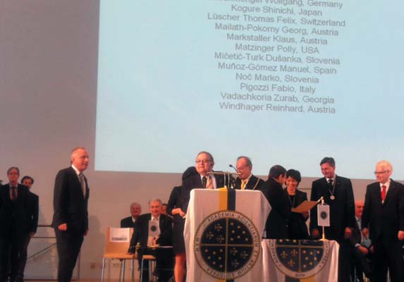
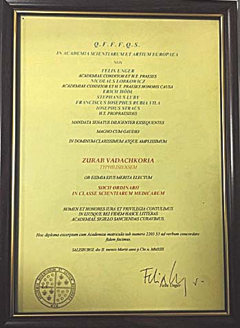
В'ячеслав Ждан, ректор Української медичної стоматологічної академії:
– Професійні контакти викладачів і студентів Української медичної стоматологічної академії і Тбіліського державного медичного університету започаткувалися давніше, але років шість тому вони стали особливо тісними. Тоді я та Сергій і Віра Радлінські поїхали у Тбілісі, щоб взяти участь у науковій конференції та інших заходах, присвячених 80-річчю ТДМУ. З ректором Зурабом Вадачкоріа ми з перших же хвилин знайшли спільну мову. Нас цікавили одні і ті самі теми, проблеми. У ті дні було підписано договір про співпрацю між нашими університетами. І за ці роки наші відносини стали не лише професійними, а й дружніми. Ми не раз обмінювалися делегаціями.
Незважаючи на завантаженість, надзвичайно широку наукову і професійну діяльність, Зураб завжди знаходить час для спілкування. Він і його дружина Марина – добрі, відкриті люди, завжди готові поділитися і професійним, і життєвим досвідом. Завдяки їм я полюбив усю Грузію, побував у її найдивовижніших історичних місцях. Це люди, з якими можна йти в розвідку. Вони бажають нам, українцям, добра.
Хочу побажати Зурабові здоров'я і здійснення всіх його задумів. Він мій щирий друг, і я буду робити все для того, щоб велику довіру цієї сім'ї пронести через усе своє життя і віддячити їм тим самим.
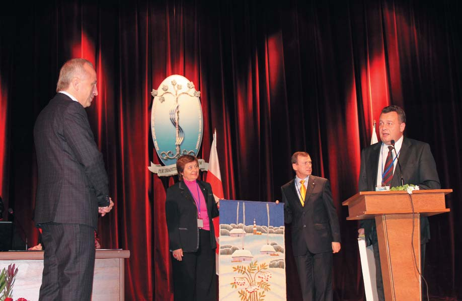
– Від розмови про свободу вибору народів перейдемо до свободи вибору людини. Чому Ви обрали професію стоматолога? Хто були Ваші вчителі?
– Маю із задоволенням зазначити, що на жодному етапі мого життя у мій вибір ніхто не втручався; порада – інша річ, але втручатися – ніколи. Я звик відповідати за свої слова і справи. Так було і після закінчення школи. У той час моєму батькові знадобилося щелепно-лицьове хірургічне втручання; я так цим перейнявся, що вирішив – це моє, і став щелепно-лицьовим хірургом, і ні секунди ніколи не шкодував про це. В оволодінні професією мені допомагало багато гідних людей, і всім їм уклін, але Учителями я вважаю професорів Маріам Григалашвілі, Олександра Колесова, Ніну Каспарову, Ларису Фролову, Володимира Віссаріонова, Фабіо Абенаволі, Гельмута Зібера, Андреаса Хамахера.
– Ви завідуєте департаментом щелепно-лицьової хірургії дитячого віку. Що нового з'явилося у наукових напрацюваннях співробітників департаменту?
– Нині серед наукових пріоритетів нашого департаменту розробка нових методик пластики верхньої губи і піднебіння при вроджених незрощеннях; крім того, останнім часом активно працюємо в напрямку наукового обґрунтування оцінки регуляції росту гемангіом та алгоритму управління ним.
– У Вас стоматологічна сім'я. Коли років шість тому ми розмовляли у Вітальні «ДентАрта» з Вашою дружиною Мариною Мамаладзе, то дізналися, що і ваші донька та син обрали стоматологію своєю професією. Як у дружини і дітей справи нині?
– Так, сім'я у нас справді стоматологічна. Для моєї дружини Марини пан Сергій Радлінський – великий авторитет; вона багато чому навчилася від нього і дуже це цінує. З особливим пієтетом вона ставиться до клініки-студії «Аполлонія» і до вашого журналу «ДентАрт». У Марини великий досвід як до-, так і післядипломного навчання, про який ми вже говорили. Під її керівництвом післядипломну освіту з терапевтичної стоматології пройшло понад 1500 грузинських і зарубіжних лікарів-стоматологів. Інноваційними методами, які Марина впровадила в до- і післядипломне навчання, цікавляться не тільки наші співвітчизники, а й колеги і партнери з-за кордону, в тому числі з країн Євросоюзу. З огляду на все це, я гадав, що наші діти хотіли б бути поруч з нею і навчитися у неї всьому найкращому в професії, але вийшло трохи не так. Наша донька Деа працює в ортопедичній стоматології, вона асоційований професор Тбіліського державного медичного університету. У неї чудовий чоловік – Давид і двоє дітей – донька Ніца і син Зураб. Наш син Отар три роки навчався у Тбіліському державному медичному університеті, потім вступив на факультет стоматології Університету Марбурга в Німеччині і розпочав там навчання з першого семестру, бо в той період, на відміну від сьогоднішнього, у Німеччині з великими труднощами відбувалося визнання пройдених у Грузії навчальних предметів. Потім через три роки навчання він перевівся до Австрії і закінчив факультет стоматології Інсбрукського медичного університету. У нього дуже хороша дружина – Каролін, німкеня, яка опанувала нашу досить складну грузинську мову; вона офтальмолог, у них двоє дітей – Лука і Марі. Отар живе в Німеччині і працює стоматологом загального профілю.
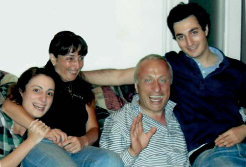
Я радий, що обоє моїх дітей орієнтовані на безперервну медичну освіту і для цього не шкодують ні сил, ні коштів. Моє серце і розум радіють, коли слухаю їхні самостійні професійні судження або дискусії з матір'ю, часто критичні і безкомпромісні.
– Як Ви знімаєте втому або стрес? Кажуть, Зураб Вадачкоріа – знавець джазу і справжніх грузинських вин. Це не Ваш афоризм: є дві технології виробництва вина – грузинська й інші?
– Маю зізнатися, я більший знавець і шанувальник театрального мистецтва, ніж джазу. Гарне вино – це справді чудово, можна підняти тост за Україну і українських друзів. Дозвольте невеликий етнографічний екскурс у грузинське виноробство. У Грузії виготовлення вина у квеврі (це глиняний посуд, глечик досить великого розміру, вкопаний у землю) почали близько восьми тисяч років тому, і традиція ця жива донині. Виявлений у Грузії глиняний посуд типу квеврі датується VI-V тисячоліттям до нашої ери, а існуюча сьогодні форма квеврі сформувалася у III-II тисячолітті. Місткість квеврі – від кількасот літрів до кількох тонн, найпоширеніший – об'ємом 1-2 тонни. До речі, традиційному методові виготовлення вина у квеврі 2013 року присуджено статус пам'ятки нематеріальної спадщини ЮНЕСКО, що свідчить про унікальність цієї технології і, фактично, є посланням для всього світу, що вино і виноробство – складова найдавнішої культури Грузії. До речі, у Кахетії можна побачити квеврі місткістю 6-8 тонн.
Безперечно, грузинське застілля – важливий культурний феномен для нас, у форматі якого народжуються дружба, любов, взаємоповага, іноді навіть вирішуються питання «державної ваги». Моє особисто уподобання – кахетинське вино, хоча влітку надаю перевагу грузинським винам, виготовленим за європейськими технологіями, взагалі, коли і кому – як...
А загалом я не любитель високоградусних напоїв; мій вибір – пиво, зокрема Pils, воно і смачне, і розслабляє, і стрес допомагає зняти... Але все це не допоможе, якщо не підтримувати фізичну форму і, по можливості, не вести здоровий спосіб життя. На мій погляд, їзда на велосипеді у цьому плані – річ першорядна, що я і роблю по кілька годин на тиждень.
– Крім гарного вина, людству потрібна гарна вода. Ваш університет, наскільки мені відомо, отримує підтримку від виробника «Боржомі». Найвідоміші грузинські і українські мінеральні води – «Боржомі» і «Миргородська» – в одній групі – IDS Інтернешнл. Під час заборони на експорт «Боржомі» північними сусідами багато українців демонстративно купували цю воду, щоб підтримати Грузію. Чиста вода стала дефіцитом на планеті. Як зберегти унікальні дари природи і здоров'я людей?
– Згоден, мінеральні води найвищої якості і унікальна природа – це благо і багатство нашої країни. Наш обов'язок – боротися із забрудненням навколишнього середовища. Тбіліський державний медичний університет разом з Національним центром з контролю захворювань і Суспільної Охорони Здоров'я (NCDC) активно задіяний майже у всіх програмах із Суспільної Охорони Здоров'я. Ми одними з перших оголосили боротьбу з курінням, беремо участь у програмах з боротьби зі СНІДом і туберкульозом, з елімінації гепатиту С. Я член координаційної ради країни з цих проблем (ССМ). І тут я повинен особливо підкреслити, що Грузія – єдина країна у світі, де державна програма з елімінації гепатиту С здійснюється за найпотужнішої підтримки Уряду США і американської фармацевтичної компанії GILEAD; уже отримано результати, що вражають: за два роки роботи програми повністю вилікувалися 98% залучених до програми хворих. Особливо цінно, що для громадян Грузії ці обстеження і дуже дороге лікування провадяться безкоштовно.
– Що б Ви побажали колегам, які будуть читати це інтерв'ю?
– Колегам з України і Грузії побажаю передусім відновлення цілісності наших держав. Я думаю, це станеться в недалекому майбутньому. І, звичайно ж, демократичного розвитку наших країн. Побажаю колегам, щоб вони отримували велике задоволення від своєї роботи. А якщо в якійсь країні колега мріє про зарплату більшу, хай і ця мрія збудеться, я ж знаю, яка складна праця стоматолога. Ця праця повинна оплачуватися нормально. Великих успіхів і всіх радощів вам, друзі! З традиціями – у майбутнє!
– Дякую за розмову! І побажаємо людству зберегти чистими і воду, і совість, і прагнення до свободи, і професійні прагнення!
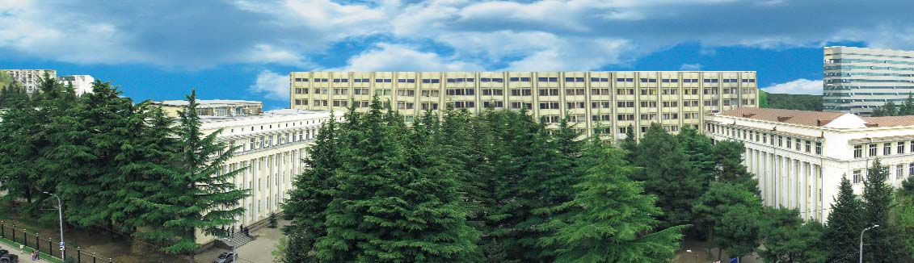

Кампус Тбіліського державного медичного університету.
Розмовляла Ганна Антипович
Фото з архіву Зураба Вадачкоріа